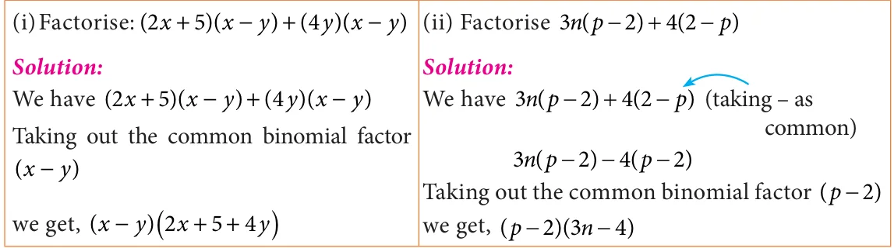
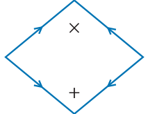
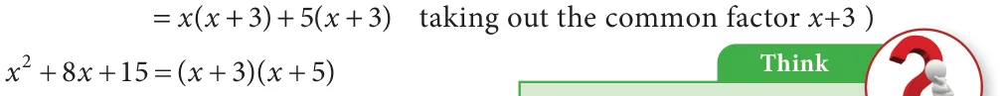
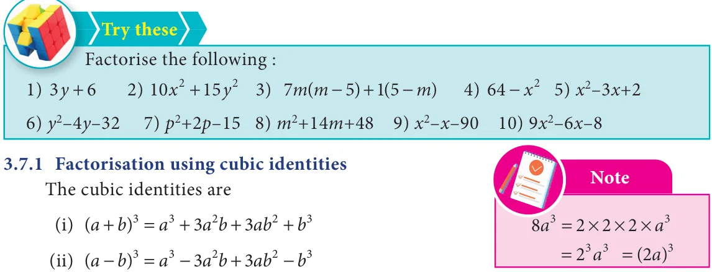

<!DOCTYPE html>
<html lang="en">
<head>
<meta charset="UTF-8">
<meta name="viewport" content="width=device-width,initial-scale=1">
<title>3.7 Factorisation — Algebra</title>
<meta name="description" content="Class 8 Mathematics · Algebra · 3.7 Factorisation">
<link rel="icon" href="data:image/svg+xml,<svg xmlns='http://www.w3.org/2000/svg' viewBox='0 0 100 100'><text y='.9em' font-size='90'>📘</text></svg>">
<link rel="stylesheet" href="../../../assets/book.css">
<link rel="stylesheet" href="https://cdn.jsdelivr.net/npm/katex@0.16.11/dist/katex.min.css" crossorigin="anonymous">
</head>
<body>
<header class="topbar">
<div class="topbar-in">
  <div class="crumb">
    <span class="c1"><a href="../../../index.html">Library</a> · <a href="../../index.html">Class 8 Mathematics</a></span>
    <span class="c2">Algebra · 3.7 Factorisation</span>
  </div>
  <a class="tb-btn" data-nav="prev" href="../../03-algebra/10-exercise-3.3/index.html" title="Exercise 3.3">←</a>
  <details class="drawer"><summary class="tb-btn" title="Sections in this chapter">☰</summary>
<div class="drawer-panel"><div class="dh">Algebra</div><a href="../01-chapter-opener/index.html">Chapter opener</a><a href="../02-introduction-3.1/index.html">3.1 Introduction</a><a href="../03-multiplication-of-algebraic-expressions-3.2/index.html">3.2 Multiplication of Algebraic Expressions</a><a href="../04-exercise-3.1/index.html">Exercise 3.1</a><a href="../05-division-of-algebraic-expressions-3.3/index.html">3.3 Division of Algebraic Expressions</a><a href="../06-avoid-some-common-errors-3.4/index.html">3.4 Avoid Some Common Errors</a><a href="../07-exercise-3.2/index.html">Exercise 3.2</a><a href="../08-identities-3.5/index.html">3.5 Identities</a><a href="../09-cubic-identities-3.6/index.html">3.6 Cubic Identities</a><a href="../10-exercise-3.3/index.html">Exercise 3.3</a><a href="../11-factorisation-3.7/index.html" aria-current="page">3.7 Factorisation</a><a href="../12-exercise-3.4/index.html">Exercise 3.4</a><a href="../13-exercise-3.5/index.html">Exercise 3.5</a><a href="../14-linear-equation-in-one-variable-3.8/index.html">3.8 Linear Equation in One Variable</a><a href="../15-exercise-3.6/index.html">Exercise 3.6</a><a href="../16-word-problems-that-involve-linear-equations-3.8.5/index.html">3.8.5 Word problems that involve linear equations</a><a href="../17-exercise-3.7/index.html">Exercise 3.7</a><a href="../18-graph-3.9/index.html">3.9 Graph</a><a href="../19-exercise-3.8/index.html">Exercise 3.8</a><a href="../20-to-obtain-a-straight-line-3.9.7/index.html">3.9.7 To obtain a straight line</a><a href="../21-linear-graph-3.10/index.html">3.10 Linear Graph</a><a href="../22-exercise-3.9/index.html">Exercise 3.9</a><a href="../23-exercise-3.10/index.html">Exercise 3.10</a><a href="../24-summary/index.html">SUMMARY</a></div></details>
  <a class="tb-btn" data-nav="next" href="../../03-algebra/12-exercise-3.4/index.html" title="Exercise 3.4">→</a>
  <button class="tb-btn" data-theme-toggle title="Toggle light / dark" aria-label="Toggle light or dark theme">◐</button>
</div>
<div class="progress"><span style="width:34.3%"></span></div>
</header>
<main class="wrap">
<div class="sec-head">
  <p class="eyebrow"><a href="../index.html">Chapter 3 · Algebra</a></p>
  <h1>3.7 Factorisation</h1>
  <p class="sec-meta">Textbook pages 19–23 · 8 figures</p>
</div>
<article class="prose">
<p>Expressing any number as the product of Note two or more numbers is called as factorisation. A number which is divisible The number 12 can be expressed as the product by 1 and itself (or) A number which of prime factors like \(12 = 2 \times 2 \times 3\). This is called has only 2 factors are called prime prime factorisation. How will you factorise an numbers. Example: 2, 3, 5, 7, 11, ... algebraic expression? Yes. Expressing an algebraic A number which has more expression as the product of two or more than 2 factors are called composite expressions is called the Factorisation. numbers.Example: 4, 6, 8, 9, 10, 12, ...</p>
<p>For example, (i) \(a - b =\) (a + b)(a - b)Here,(a + b)and (a - b)are the two factors of \(a - b\)</p>
<ul class="qlist">
<li><span class="mk">(ii)</span><span class="lt">\(5y + 30 = 5(y + 6)\) , Here 5 and (y + 6)are the factors of \(5y + 30\)</span></li>
</ul>
<p>Any expression can be Factorised as \((1) \times\) (expression)</p>
<p>For example, \(a - b\) can also be factorised as</p>
<div class="mathblock"><p>\((1) \times\) (a \(- b\) )or ( \(- 1) \times\) (b \(- a\) )</p></div>
<p>because ‘1’ is a factor for all numbers and expressions So, when we factorise the expressions, follow the suitable type of factorisation given below to get two or more factors other than 1. Stop doing the factorisation process once you have taken out all the common factors from the expression and then list out the factors.</p>
<p>Type 1: Factorisation by taking out the common factor from each term. Example 3.18</p>
<div class="mathblock"><p>Factorise: \(4x y + 8xy\)</p></div>
<h4 class="callout-h" id="s-solution">Solution:</h4>
<p>We have, \(4x y + 8xy\) This can be written as,</p>
<div class="mathblock"><p>\(= (2 \times 2 \times x \times x \times\) y) \(+ (2 \times 2 \times 2 \times x \times\) y)</p></div>
<p>Taking out the common factor 22,,x, y , we get</p>
<div class="mathblock"><p>\(= 2 \times 2 \times x \times\) y(x \(+ 2) = 4xy(x + 2)\)</p></div>
<p>Type 2 : Factorisation by taking out the common binomial factor from each term Example 3.19</p>
<figure class="fig table-fig wide"></figure>
<p>Type 3 : Factorisation by grouping</p>
<p>Sometimes, the terms of a given expression are grouped suitably in such a way that they have a common factor so that the factorisation is easy to take out common factor from those terms.</p>
<h4 class="callout-h" id="s-example-3-20">Example 3.20</h4>
<p>Factorise : \(x +\) yz + xy + xz</p>
<h4 class="callout-h" id="s-solution">Solution:</h4>
<p>We have, \(x +\) yz + xy + xz</p>
<p>Group the terms suitably as, = (x + xy) \(+(yz +\) xz) = x(x \(+ y)+\) z(y + x) = x(x \(+ y)+\) z(x + y) (addition is commutative) = (x + y)(x + z) [taking out the common factor (x + y) ]</p>
<p>Type 4 : Factorisation using identities</p>
<ul class="qlist">
<li><span class="mk">(i)</span><span class="lt">(a + b) \(= a + 2ab + b\) (ii) (a - b) \(= a - 2ab + b\) (iii) \(a - b =\) (a + b)(a - b)</span></li>
</ul>
<h4 class="callout-h" id="s-example-3-21">Example 3.21</h4>
<div class="mathblock"><p>Factorise : \(x + 8x +16\)</p></div>
<h4 class="callout-h" id="s-solution">Solution:</h4>
<p>Now, \(x + 8x +16\) can be written as \(x + 8x + 4\)</p>
<p>Comparing this with \(a + 2ab + b =\) (a + b) we get \(a = x\) ; \(b = 4\)</p>
<div class="mathblock"><p>(x \()+ 2(x)(4)+ (4) =\) (x \(+ 4)\)</p></div>
<div class="mathblock"><p>\(x + 8x +16 =\) (x \(+ 4)\)</p></div>
<p>(x+4), (x+4) are the two factors.</p>
<h4 class="callout-h" id="s-example-3-22">Example 3.22</h4>
<div class="mathblock"><p>Factorise \(49 -\) xy +</p></div>
<h4 class="callout-h" id="s-solution">Solution:</h4>
<div class="mathblock"><p>Now, \(49 -\) xy +</p></div>
<figure class="fig"></figure>
<p>- xy \(+ =\) ( ) - xy + ( )</p>
<p>Comparing this with \(a -\) ab \(+ =\) ( - ) we get = , \(b =\)</p>
<p>( ) - ( )( )+ ( ) = ( \(- \therefore -\) xy \(+ =\) ( -</p>
<p>\((7x - 6y)\), \((7x - 6y)\) are the two factors.</p>
<h4 class="callout-h" id="s-example-3-23">Example 3.23</h4>
<p>Factorise : \(49 -\)</p>
<h4 class="callout-h" id="s-solution">Solution:</h4>
<p>Now, \(49 -\)</p>
<p>\(- =\) ( ) - ( )</p>
<p>Comparing this with \(a - =\) ( + )( - ) we get = , \(= 8\)</p>
<p>( ) - ( ) = ( + )( - )</p>
<p>(7x+8y), \((7x - 8y)\) are the two factors.</p>
<p>Type 5 : Factorisation of the expression (ax + bx + c) Example 3.24</p>
<div class="mathblock"><p>Factorise \(x + 8x +15\)</p></div>
<figure class="fig side-fig"></figure>
<p>Solution: _{2} ü</p>
<div class="mathblock"><p>Given \(x + 8x +15\)</p></div>
<p>This is in the form of ax + bx \(+ c +15\)</p>
<div class="mathblock"><p>We get \(a =1,b = 8,c =15\)</p></div>
<figure class="fig side-fig"></figure>
<p>Now, the product \(= a \times c\) and sum \(= b +3 +5\)</p>
<div class="mathblock"><p>\(=1 \times 15 b = 8 = 15 = + + +8\)</p></div>
<p>\(= + + +\) (the middle term 8x can be written as \(3x+5x) =\) ( \(+ )+\) ( + )</p>
<figure class="fig wide"></figure>
<p>= ( \(+ )+\) ( + ) ( )( )</p>
<p>Therefore, (x+3), (x+5) are the two factors.</p>
<h4 class="callout-h" id="s-example-3-25">Example 3.25</h4>
<figure class="fig table-fig side-fig"></figure>
<div class="mathblock"><p>Factorise \(7c + 2c - 5\)</p></div>
<h4 class="callout-h" id="s-solution">Solution:</h4>
<div class="mathblock"><p>Given \(7c + 2c - 5\)</p></div>
<p>This is in the form of ax + bx \(+ c\) ü</p>
<div class="mathblock"><p>We get \(a = 7\), \(b = 2\), \(c = - 5\)</p></div>
<p>Now, the product \(= a \times c = 7 \times\) ( \(- 5)= - 35\) and sum \(b = 2 - 35\)</p>
<div class="mathblock"><p>\(= 7c + 2c - 5\)</p></div>
<figure class="fig side-fig"></figure>
<p>7c 5c 7c 5 (the middle term 2c can be \(- 5 +7\)</p>
<div class="mathblock"><p>written as \(- 5c+7c)\)</p></div>
<div class="mathblock"><p>\(= (7c - 5c)+ (7c - 5)\)</p></div>
<p>= ( \(- )+1 7( - 5\) (taking out the common factor ) \(7c - 5\) ) \(+2 =\) ( - )( + ) Therefore, \((7c - 5)\), (c+1) are the two factors.</p>
<figure class="fig table-fig wide"></figure>
<p>I. Factorise using the identity (a + b) \(= a + 3a b + 3ab + b\) Example 3.26 Note</p>
<p>Factorise: \(x + 15x + 75x + 125\) Perfect cube numbers Solution: A number which can be written</p>
<p>Given \(x + 15x + 75x + 125\) in the form of \(x \times x \times x\) is called _{3} _{2} _{3} perfect cube number. This can be written as \(x + 15x + 75x + 5\) Examples: Comparing with \(a^{3} + 3a^{2}b + 3ab^{2} + b^{3} =\) (a \(+ b)^{3} 8 = 2 \times 2 \times 2 = 2^{3}\)</p>
<div class="mathblock"><p>we get \(a = x\) , \(b = 5 27 = 3 \times 3 \times 3 = 3^{3}\)</p></div>
<p>The given expression can be expressed as \(125 = 5 \times 5 \times 5 = 5^{3} (x)^{3} + 3(x)^{2} (5) + 3(x) (5)^{2} + (5)^{3} =\) (x \(+ 5)^{3}\) Here 8, 27, 125 are some of perfect = (x \(+ 5)\) (x \(+ 5)\) (x \(+ 5)\) are the three factors. cube numbers</p>
<p>II. Factorise using the identity (a - b) \(= a - 3a b + 3ab - b\) Example 3.27</p>
<div class="mathblock"><p>Factorise: \(8p - 12p q + 6pq - q\)</p></div>
<h4 class="callout-h" id="s-solution">Solution:</h4>
<div class="mathblock"><p>Given \(8p - 12p q + 6pq - q\)</p></div>
<p>This can be written as \((2p) - 12p q + 6pq -\) (q)</p>
<p>Comparing this with \(a - 3a b + 3ab - b =\) (a - b) we get \(a = 2p,b = q\) The given expression can be expressed as</p>
<div class="mathblock"><p>\((2p) - 3(2p)\) (q) \(+ 3(2p)(q) -\) (q) \(= (2p -\) q)</p></div>
<p>\(= (2p -\) q), \((2p -\) q), \((2p -\) q) are the three factors.</p>
</article>
<nav class="pager"><a class="" data-nav="prev" href="../../03-algebra/10-exercise-3.3/index.html"><span class="dir">← Previous</span><span class="t">Exercise 3.3</span><span class="ch">Algebra</span></a><a class="nx" data-nav="next" href="../../03-algebra/12-exercise-3.4/index.html"><span class="dir">Next →</span><span class="t">Exercise 3.4</span><span class="ch">Algebra</span></a></nav>
</main><footer class="site">Generated from the source textbook PDFs · text, figures and exercises belong to their respective publishers.</footer><script defer src="https://cdn.jsdelivr.net/npm/katex@0.16.11/dist/katex.min.js" crossorigin="anonymous"></script>
<script defer src="https://cdn.jsdelivr.net/npm/katex@0.16.11/dist/contrib/auto-render.min.js" crossorigin="anonymous"
  onload="renderMathInElement(document.body,{delimiters:[
    {left:'\\(',right:'\\)',display:false},
    {left:'$$',right:'$$',display:true},
    {left:'\\[',right:'\\]',display:true}],throwOnError:false,ignoredTags:['script','noscript','style','textarea','pre','code']})"></script>
<script src="../../../assets/book.js"></script>
</body>
</html>
